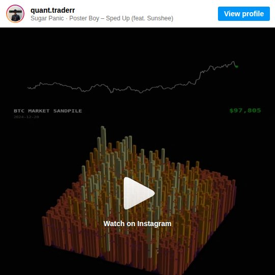
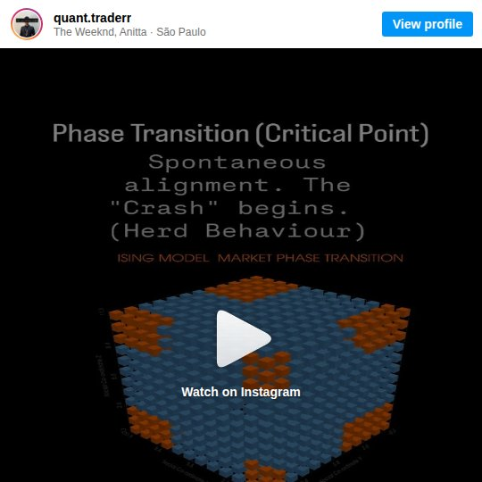
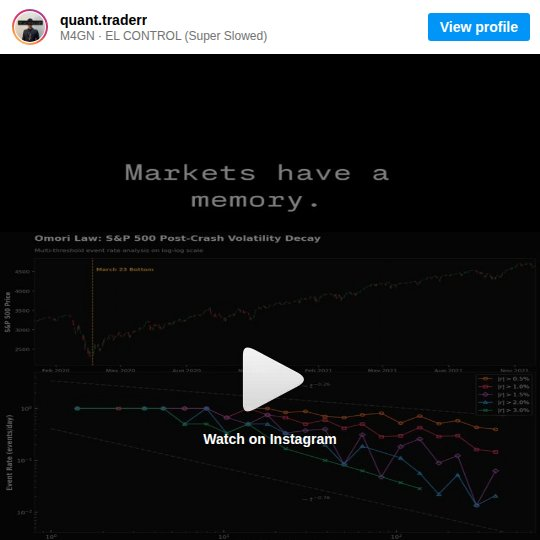
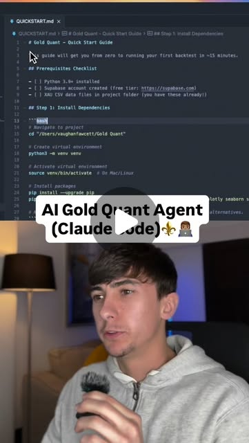

Physics Models → Market Alpha: When Scientists Become Traders
Try It — Action Sketch
Study the cross-disciplinary models. Build a signal ensemble that combines 3+ physics-derived indicators. Backtest with Monte Carlo validation. Deploy as an AI agent that runs daily.
Connected Posts (8)







Prompt system — run this yourself
Pasteable into Claude Code, Claude, or any agent. One-shot for the whole result, step prompts when you want to steer. Every step carries its own audit; the gap audit makes the agent find and fill what it missed.
Mission. Turn the physics-to-markets posts (phase space reconstruction, sandpile avalanches, Ising herding, Heston stochastic volatility, Omori aftershock decay, Wasserstein drift) into tested indicators on real data, combine the survivors into a small ensemble, and judge it with a backtest that has controls, multiple-testing correction and costs. For a quant-curious builder who wants to know which imported models carry real signal. Done means: each model is reproduced from its original paper, each indicator has an out-of-sample result against random and buy-and-hold controls, and nothing touches real money until a paper-trading arm passes pre-set gates.
1 · Deeper, not bigger
- What a top professional would do (that you didn't ask for): A quant researcher would treat each physics model as a hypothesis with a pre-registered test. They would first reproduce the original empirical result (for example Omori decay of volatility after a crash, as in Lillo and Mantegna 2003) before trading on it. They would correct for every model and parameter tried with a deflated Sharpe ratio or White's Reality Check, because testing 26 ideas guarantees some look good by chance. They would model costs and funding first, and drop models that only describe the past.
- Rawest material to start from: Papers: Bak, Tang and Wiesenfeld 1987 (self-organized criticality); Omori 1894 and Utsu's modified law; Lillo and Mantegna 2003 'Power-law relaxation in a complex system: Omori law after a financial market crash'; Bornholdt 2001 Ising spin model of markets; Heston 1993; Takens 1981 embedding theorem with Fraser-Swinney mutual information for tau and Kennel 1992 false nearest neighbors for dimension; Bailey and Lopez de Prado 2014 deflated Sharpe ratio; Villani or Cuturi 2013 for Wasserstein and Sinkhorn. Data: Binance public klines (data.binance.vision), CBOE VIX history, Deribit BTC options chains for Heston calibration, a gold futures or XAUUSD series for the greymatter_ai claim. The creators' own code repos where quant.dhawan offers them (Sandpile, Ising, Omori) - get them and read them.
- Methods and tools: scipy curve_fit for Omori n(t)=K/(t+c)^p on threshold exceedances; powerlaw for tail fits; nolds or teaspoon for mutual information and false nearest neighbors; QuantLib Heston calibration; POT (ot.sinkhorn) and scipy wasserstein_distance for drift; arch for block bootstrap and Hansen SPA; walk-forward with purging and embargo; a vectorized backtester with explicit fees and slippage.
- What proves it right: Reproduction of a published figure (Omori exponent p near 1 after the 1987 or 2020 crash, within the paper's reported range). Out-of-sample results on data after the parameter freeze. Controls: buy-and-hold, random-entry with matched exposure and holding time, and the same signal with shuffled timestamps. Hansen SPA or deflated Sharpe p-value across all variants tried. A paper-trading arm on an exchange testnet or paper account for at least 60 days.
Rewritten prompt — ask for exactly that:
You are a quant researcher. Treat each physics model from these posts as a hypothesis, not a signal: phase space reconstruction of BTC volatility (tau=3 in the post), Bak-Tang-Wiesenfeld sandpile criticality, Ising herding, Heston stochastic volatility, Omori aftershock decay of post-crash volatility, and Wasserstein/Sinkhorn backtest-to-live drift. For each: 1) find the original paper and reproduce its main empirical claim on public data (Binance klines, VIX, Deribit options); 2) define one concrete trading or risk indicator with a written rule; 3) pre-register parameters and a test window before looking at out-of-sample data; 4) backtest with fees and slippage against buy-and-hold, random-entry and shuffled-signal controls, walk-forward with purging. Count every variant you try and report a deflated Sharpe ratio or Hansen SPA p-value. Combine only survivors into an ensemble. Then run a paper-trading arm for 60 days with max 1% of notional per position and a 3% daily loss stop. No real money until the out-of-sample and paper gates pass. Report each model's verdict: reproduced or not, predictive or descriptive only, survives correction or not.
2 · One-shot prompt
ROLE: You are a quant researcher with a physics background. Stance: every imported model is a hypothesis; a pretty chart is not evidence; no result counts without costs, controls and a multiple-testing correction. CONTEXT: Source posts (mostly quant.dhawan) claim: phase space reconstruction with time delay tau=3 'unfolds' BTCUSD volatility into an attractor where clustered points mean predictability and scattered points mean chaos; markets reach self-organized criticality so 'the news just tipped it over' (Bak-Tang-Wiesenfeld); an Ising lattice shows herding and symmetry breaking into trends or crashes; Heston captures smile and skew that Black-Scholes misses; Omori's law means post-crash volatility aftershocks decay by a power law and 'can time post-crash mean reversion entries'; Wasserstein distance and Sinkhorn divergence measure the reality gap between backtest and live. greymatter_ai claims an XGBoost gold agent on 6M data points with '44 to 51% accuracy' that is 'extremely profitable'. nataindata shows a Monte Carlo wealth projection. Data: data.binance.vision klines, CBOE VIX, Deribit options, a gold series. Libraries: numpy, scipy, pandas, nolds, powerlaw, QuantLib, POT, arch, hmmlearn. HARD CONSTRAINTS: No real orders. Backtests include taker fees, slippage of at least 1 tick or 2 bps, and funding for perpetuals. Parameters are frozen in PREREG.md before any out-of-sample run. Count every variant tried in VARIANTS.csv. Controls are mandatory: buy-and-hold, random-entry with matched exposure, shuffled-signal. Paper arm caps: 1% of notional per position, 3% daily loss stop, 10% total drawdown stop. Never promise or project returns. DELIVERABLES: 1. data/ cached parquet with a manifest of sources, ranges, and gaps. 2. repro/: one notebook or script per model reproducing its paper's core claim, with the figure and fitted parameters next to the paper's values. 3. indicators/: one function per model with a docstring stating the rule (e.g. 'Omori: after a daily return below -3 sigma, fit p on exceedance counts; enter long volatility mean-reversion when fitted decay exceeds X'). 4. PREREG.md: parameters, train, validation and test windows, metrics, gates. 5. backtest/ results per indicator and for the ensemble vs all three controls, walk-forward, with Sharpe, max drawdown, turnover, hit rate and payoff ratio. 6. STATS.md: deflated Sharpe or Hansen SPA across VARIANTS.csv. 7. paper/: paper-trading runner with caps and a daily log. BUILT-IN GAP ANALYSIS: Maintain GAPS.md: models you could not reproduce and why; claims that are descriptive only (likely Ising and sandpile visuals); data gaps; the greymatter accuracy claim tested by computing expected value from hit rate and payoff ratio; the Monte Carlo wealth chart tested for sequence risk and fat tails. Fill gaps where possible before finishing. SELF-QUESTIONS: Did tau=3 come from mutual information or was it copied from the post? Is the attractor 'clustering' different from what a surrogate (phase-randomized) series produces? Is the Omori exponent stable across crashes? Does Heston calibration converge and is it stable day to day? Does any indicator beat the random-entry control after costs? How many variants did I try, and what does the correction do to my best Sharpe? Is 44-51% accuracy profitable at the stated payoff ratio, or not? STOP CONDITIONS: Stop when every model has a verdict (reproduced/not, predictive/descriptive, survives correction/not), the ensemble has an out-of-sample result, and the paper arm is running with caps. Stop early if no indicator beats controls after correction - that is a valid result; report it. RETURN FORMAT: A table with one row per model: paper reproduced (Y/N with numbers), indicator rule, out-of-sample Sharpe vs each control, deflated Sharpe or SPA p-value, verdict. Then the ensemble row, the paper-arm status and the GAPS.md list. End with: REAL MONEY GATE: CLOSED until paper arm passes, with the pass criteria.
3 · Step-by-step prompts
Step 1 — Ground truth: papers, creator code and clean data
Goal: Have the original math, the creators' code and clean data before building anything.
Collect the rawest material. Papers: Bak-Tang-Wiesenfeld 1987; Utsu's modified Omori law; Lillo and Mantegna 2003 on Omori relaxation after market crashes; Bornholdt 2001 spin model of markets; Heston 1993; Takens 1981 plus Fraser-Swinney 1986 and Kennel et al. 1992 for embedding parameters; Bailey and Lopez de Prado 2014 deflated Sharpe ratio; Cuturi 2013 Sinkhorn. Write repro/PAPERS.md with, per paper, the exact claim, equation and reported parameter values. Get quant.dhawan's offered repos (Sandpile, Ising, Omori, Spread) if public and note what they actually compute. Download data: BTCUSDT 1h and 1d klines 2018-present from data.binance.vision, VIX daily from CBOE, Deribit BTC option snapshots if available, and a gold daily series 2004-present. Save as parquet with data/MANIFEST.md (source URL, range, rows, missing intervals, timezone). Split now: train up to 2022-12-31, validation 2023, test 2024 onward, and do not open test data again until step 6.
Expect: repro/PAPERS.md with 8+ entries, data/*.parquet, data/MANIFEST.md with gaps listed, a written split.
Audit before moving on: Check for duplicated or missing candles and timezone errors; any gap over 1% of rows is listed. Confirm no file in the test window is read by any later script except step 6 (grep paths).
Step 2 — Reproduce each model's original claim
Goal: Know which models replicate on market data before any trading rule.
For each model write repro/<model>.py on train data only. Omori: pick crash events (daily return below -3 sigma, plus March 2020), count absolute hourly returns above a threshold after each, fit n(t)=K/(t+c)^p with curve_fit, report p with confidence intervals and compare to Lillo-Mantegna. Phase space: compute mutual information to choose tau and false nearest neighbors for dimension on BTC realized volatility; compare to the post's tau=3; build the embedding and compare a recurrence or correlation-dimension statistic against 100 phase-randomized surrogates. Sandpile: run a BTW simulation, get the avalanche-size distribution, then test whether BTC drawdown sizes follow a power law with the powerlaw package (compare against lognormal with its likelihood ratio). Ising: implement Bornholdt's model, check it produces volatility clustering and fat tails; note it is a generative model, not a predictor. Heston: calibrate with QuantLib to Deribit option quotes on 10 dates; report fit error and parameter stability. Wasserstein: compute distance between rolling return distributions. Write repro/RESULTS.md: reproduced yes/no with numbers.
Expect: One script per model and RESULTS.md with fitted values beside paper values and a yes/no per model.
Audit before moving on: Every 'reproduced' row has a number within the paper's reported range or a stated tolerance. Surrogate tests must show a p-value; if real data is indistinguishable from surrogates, mark the attractor claim not supported.
Step 3 — Turn survivors into written indicator rules
Goal: Convert reproduced models into explicit, testable rules with frozen parameters.
For each model that reproduced, write indicators/<model>.py exposing one function signal(df) -> Series in {-1,0,1} or a risk scalar, with the rule in the docstring. Examples to make concrete: Omori - after a crash event, hold a volatility mean-reversion position while the fitted aftershock rate is decaying faster than the exponent threshold; exit at t_max. Phase space - risk scalar from local divergence rate in the embedding; reduce exposure when it exceeds the 80th percentile. Wasserstein - kill switch: flag a strategy when the 30-day live return distribution exceeds the 95th percentile of bootstrap distances to its backtest distribution. Heston - use calibrated vol-of-vol as a regime feature, not a trade. Models that only described the past (likely Ising, sandpile) become risk features or are dropped, with the reason in GAPS.md. Write PREREG.md: every parameter value, the validation window, primary metric (Sharpe after costs), secondary metrics, and pass gates (beats all three controls on validation, deflated Sharpe above 0.95 probability). Log every variant you try to VARIANTS.csv from now on.Expect: indicators/ with one function per surviving model, PREREG.md committed, VARIANTS.csv started.
Audit before moving on: Check each signal for look-ahead: shift features by one bar, and run a test that randomizes future bars and confirms past signals do not change. Fail on any change.
Step 4 — Backtest with costs and controls
Goal: Measure each indicator against controls on validation data.
Build backtest/engine.py: vectorized, next-bar execution, taker fee 0.05% per side for perpetuals or the venue's actual fee, slippage 2 bps, funding from Binance history for perpetuals. Implement three controls: buy-and-hold; random-entry matching the indicator's number of trades, holding times and exposure (1,000 draws, report the indicator's percentile); shuffled-signal (permute signal dates, 1,000 draws). Walk-forward on train with purging and embargo of the holding period, then one run on validation. Report Sharpe, Sortino, max drawdown, turnover, hit rate, average win, average loss and payoff ratio. Separately test greymatter_ai's framing: show that a 44-51% hit rate is profitable only if payoff ratio exceeds (1-p)/p, and compute that from your own results. Save backtest/results.csv with one row per indicator, control and walk-forward fold.
Expect: results.csv with one row per indicator and control, plus control percentiles.
Audit before moving on: Re-run with fees doubled; any indicator whose Sharpe goes negative is marked cost-fragile. Confirm trade counts are high enough (at least 30 trades) or mark the result low-sample.
Step 5 — Multiple-testing correction and ensemble
Goal: Correct for everything you tried and combine only real survivors.
From VARIANTS.csv count the total variants tried. Compute the deflated Sharpe ratio for the best variant of each indicator (Bailey and Lopez de Prado) and run Hansen's SPA test with arch.bootstrap.SPA against buy-and-hold, using stationary block bootstrap. Keep only indicators that pass both their PREREG gate and the correction. Build the ensemble as an equal-risk combination of surviving signals (no fitted weights, to avoid another overfit layer), with the Wasserstein kill switch and phase-space risk scalar applied on top if they reproduced. Write STATS.md with the counts, the corrected statistics and the ensemble rule. Also stress test with Monte Carlo the honest way: block-bootstrap the validation trade sequence 10,000 times and report the 5th percentile drawdown and the probability of a losing year - the opposite of nataindata's 'I'd end up rich' framing.
Expect: STATS.md with variant count, deflated Sharpe, SPA p-values, the ensemble rule and bootstrap drawdown distribution.
Audit before moving on: If no indicator survives, the ensemble is empty and the report says so; do not loosen gates after seeing results. Check that the variant count includes abandoned attempts.
Step 6 — One-shot out-of-sample test
Goal: Run the frozen ensemble once on unseen test data.
With PREREG.md and the ensemble rule committed, run the ensemble and all three controls once on the 2024-onward test window. No changes after seeing results. Report every metric from step 4, plus the Wasserstein distance between test-period returns and validation-period returns to show how far the market shifted. If the test result is far worse than validation, record it as the expected outcome of overfitting or regime change and do not re-tune on test data. Report the ensemble's percentile within the random-entry control distribution on the test window, the number of trades, and the worst peak-to-trough drawdown with its dates. Split the test window into calm and stressed periods by VIX or realized-vol tercile and report each, so a result carried by one crash is visible. Write backtest/TEST.md.
Expect: TEST.md with ensemble vs controls on the test window and the drift measurement.
Audit before moving on: Confirm via git log that PREREG.md and the ensemble code predate the test run. Any edit after the test run voids the result and must be disclosed.
Step 7 — Paper arm with caps and the money gate
Goal: Prove behavior live without real money.
Build paper/runner.py against an exchange testnet or a paper account. Same signals, same cost model, logged daily to paper/log.parquet. Caps in code, not config: max 1% of paper notional per position, max 3 concurrent positions, 3% daily loss stop that flattens and halts until the next day, 10% total drawdown stop that halts the arm. Run a random-entry control in parallel paper. Gates to open real money, written in paper/GATE.md: at least 60 days and 30 trades, ensemble beats the paper random control, live-vs-backtest Wasserstein distance below the 95th bootstrap percentile, no cap breaches due to bugs. Until all pass, any code path to a real-money API key raises an error. Run a fault test: inject a 10% price gap and confirm the stops fire.
Expect: A running paper arm with logs, GATE.md, a passing fault test, and a hard block on real keys.
Audit before moving on: Grep for any real-exchange endpoint or key use; fail if present. Confirm the stops fired in the fault test with log lines.
Step 8 — Validate against oracles and write the gap report
Goal: Final verdict per model and an honest list of what is missing.
Run the oracle checks: paper reproductions within tolerance; out-of-sample ensemble vs controls; SPA or deflated Sharpe result; paper arm status against GATE.md; fault test passed. Write REPORT.md with a table per model: reproduced (numbers), predictive or descriptive only, indicator rule, validation and test Sharpe vs controls, corrected significance, verdict. Write GAPS.md: models not reproduced and why, creator claims not supported (e.g. 'clustered attractors suggest predictability' if surrogates matched; 'can time post-crash entries' if Omori did not beat random entry), data gaps, untested ideas from the 26-post set. Rank the gaps by expected information value and fix the top two now. End with: REAL MONEY GATE: CLOSED (or the exact gate status), followed by every unmet gate criterion with its current value.
Expect: REPORT.md, GAPS.md, and an explicit gate status line.
Audit before moving on: Every verdict links to a file and number. Any oracle not run is FAIL-UNRUN. Remove any sentence implying expected profits.
4 · Gap analysis and audit
You did not build this research. Audit it from files: repro/, indicators/, PREREG.md, VARIANTS.csv, backtest/results.csv, STATS.md, TEST.md, paper/, REPORT.md, GAPS.md. Enumerate every quantitative claim: fitted Omori p, chosen tau and dimension, surrogate p-values, Heston fit error, Sharpe values, control percentiles, deflated Sharpe, SPA p-value, test-window results, paper-arm stats. Mark each VERIFIED (re-ran the script and matched within rounding), UNVERIFIED (could not run; say why), or FALSE (different number; show both). Specifically re-check: look-ahead (shift every feature by one more bar and see if results collapse), cost model (fees and funding actually subtracted), that PREREG.md predates validation and test runs in git history, that VARIANTS.csv count matches the number of result files, that random-entry controls match exposure, that the paper arm has hard-coded caps and no real-money endpoints. List missing pieces (no capacity analysis, no borrow or funding stress, no regime split, single venue data), rank by risk of a false positive, fix the top three now, and report what you could not fix and why. Restate the real-money gate status.
Questions the agent must ask itself before it says done:
- Did I choose tau and embedding dimension from mutual information and false nearest neighbors, or copy tau=3 from the post?
- Is the attractor structure on BTC volatility distinguishable from phase-randomized surrogates?
- Is the Omori exponent stable across different crashes, or does it vary so much it cannot time anything?
- Do drawdown sizes follow a power law better than a lognormal by likelihood ratio, or does the sandpile story fail the test?
- Is the Ising model predictive of anything, or only a generator of stylized facts?
- Is Heston calibration stable day to day, or do parameters jump so much the feature is noise?
- How many variants did I try in total, and did I count the ones I abandoned?
- Does each indicator beat a random-entry control with matched exposure after fees, slippage and funding?
- At my measured hit rate, what payoff ratio is needed to break even, and do I have it?
- Did anything I learned from the test window leak back into parameters?
- Is the paper arm's live return distribution drifting from the backtest by Wasserstein distance?
- Are the caps enforced in code paths I tested, not only in configuration?
- Is there any route from this repo to a real-money order?
5 · What proves it right
- Lillo and Mantegna 2003: reproduce an Omori exponent p for a major crash within the range the paper reports, using the same threshold-exceedance method.
- Phase-randomized surrogate test: 100 surrogates, report p-value for the attractor statistic; claim supported only at p < 0.05.
- Hansen SPA test (arch package) or deflated Sharpe ratio across every variant in VARIANTS.csv; pass only above the pre-registered threshold.
- Single frozen run on the 2024-onward test window vs buy-and-hold, random-entry and shuffled-signal controls, with PREREG.md predating it in git.
- Paper arm on a testnet or paper account for at least 60 days and 30 trades, beating a parallel random-entry paper control with zero cap breaches.
6 · Failure modes
- Look-ahead bias. Tell: Sharpe above 3 on hourly crypto, collapses when features shift one bar. Fix: one-bar shift and a future-randomization unit test.
- Forking paths. Tell: many variants, best reported. Fix: VARIANTS.csv plus deflated Sharpe or SPA.
- Pretty but descriptive. Tell: Ising or sandpile visuals with no out-of-sample rule. Fix: require a written rule and a control test, or label descriptive only.
- Costs ignored. Tell: high turnover strategy turns negative with fees doubled. Fix: fees, slippage and funding in the engine from day one.
- Accuracy confused with profit. Tell: '51% accuracy, extremely profitable'. Fix: compute expected value from hit rate and payoff ratio.
- Monte Carlo optimism. Tell: wealth fan from normal returns. Fix: block bootstrap of real trades, report the 5th percentile drawdown.
- Regime change after deployment. Tell: live distribution drifts from backtest. Fix: Wasserstein kill switch and the paper gate.
7 · Agent direction (unattended runs)
Reach first for the papers and data.binance.vision; cache data as parquet and papers as PDFs with a manifest. Freeze splits on day one and enforce them by path: test-window files are only read in step 6. Spawn one sub-agent per model reproduction in step 2 (they share no files); give each only its paper and the train data. Run the backtest engine and controls yourself; review sub-agent indicator code for look-ahead before use. Spawn a fresh sub-agent with no context for the gap audit. Stop and ask the human before: opening the test window a second time, changing PREREG.md after validation, connecting any exchange account, or loosening any cap. Never place real orders; any real-key code path raises. Return REPORT.md, GAPS.md, STATS.md, TEST.md and paper/GATE.md with the gate status on the first line, plus a one-row-per-model summary table.
Prompt system updated 2026-10-22 · all prompt systems · JSON